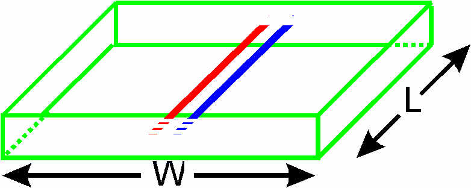

The support for coupled lines is not completely finished yet. However, it is possible to perform most tasks one would want to do with such a program. From a user's specification of a frequency response and coupling factor of a directional coupler, it is now possible to generate a physical layout that will have those specifications!. It is hoped this will be useful.
Using the program design_coupler it is possible to fully automate the process of designing a directional coupler. Note that the directional coupler designed must have a fixed physical shape shown below

although the shape is in practice quite a practical one to use for air-spaced lines. In fact, most people would consider it the easiest directional coupler to make for such situations.
However, design_coupler can not be used to fully automate the process of designing directional couplers on PCBs, but other methods exist to make that job easier. Some manaul and fairly tedious work is needed to design a directional coupler on a PCB having the properties (frequency response, coupling factor) that you want. However, it can be done with the aid of the package of programs provided in atlc.
atlc, it is possible to calculate the capacitance per m, inductance per m, mode impedances, etc of an arbitrary shaped directional coupler. The directional coupler can have any shape of conductors and any number of dielectrics. From the data obtained from atlc it is possible to compute the properties of the directional coupler. It is not currently possible to design an arbitrary shaped directional coupler to have the properties you need., using a fully automated process. It is hoped at a later date to allow the process to be fully automated for PCB based directional couplers and perhaps some other common designs. That process will probably be fairly computationally expensive.
generate_coupler, (rather than design_coupler) one can very quickly generate a bitmap of a directional coupler, for analysis by the program atlc. In fact, since there is an analytical solution for the the particular shaped generated, that exact solution is calculated too. This was primarily designed for checking for errors in atlc with coupled lines, which were always found to be less than 0.8%
Next how to peform these tasks will be be described, followed by a few examples.
atlcConsider the transmission lines below, which has three metal conductors - a ground shown in green and the two inner conductors shown (shown red and blue) coupled together.
Such a structure has two characteristic impedances - an odd-mode impedance Zodd and an even-mode impedance Zeven. If the structure is drawn in red, blue and green, atlc will interpret this as a directional coupler and therefore computes both impedances.
wren % atlc -v directional couplerxx.bmp directional couplerxx.bmp Er= 1.0000 C= 55.1412 pF/m L= 201.7820 nH/m Zo= N/A Ohms Zodd= 60.4927 Ohms Zeven= N/A Ohms v= 2.9979 e+08 m/s v_f= 1.0000 VERSION= 4.0.0 directional couplerxx.bmp Er= 1.0000 C= 54.1717 pF/m L= 205.3932 nH/m Zo= N/A Ohms Zodd= 61.5753 Ohms Zeven= N/A Ohms v= 2.9979 e+08 m/s v_f= 1.0000 VERSION= 4.0.0 directional couplerxx.bmp Er= 1.0000 C= 54.0835 pF/m L= 205.7283 nH/m Zo= N/A Ohms Zodd= 61.6758 Ohms Zeven= N/A Ohms v= 2.9979 e+08 m/s v_f= 1.0000 VERSION= 4.0.0 directional couplerxx.bmp Er= 1.0000 C= 54.0683 pF/m L= 205.7862 nH/m Zo= N/A Ohms Zodd= 61.6931 Ohms Zeven= N/A Ohms v= 2.9979 e+08 m/s v_f= 1.0000 VERSION= 4.0.0 directional couplerxx.bmp Er= 1.0000 C= 54.0657 pF/m L= 205.7958 nH/m Zo= N/A Ohms Zodd= 61.6960 Ohms Zeven= N/A Ohms v= 2.99792e+08 m/s v_f= 1.0000 VERSION= 4.0.0 directional couplerxx.bmp Er= 1.0000 C= 36.6079 pF/m L= 303.9368 nH/m Zo= 74.9774 Ohms Zodd= 61.6960 Ohms Zeven= 91.1180 Ohms v= 2.99792e+08 m/s v_f= 1.0000 VERSION= 4.0.0 directional couplerxx.bmp Er= 1.0000 C= 35.5586 pF/m L= 312.9064 nH/m Zo= 76.0757 Ohms Zodd= 61.6960 Ohms Zeven= 93.8070 Ohms v= 2.99792e+08 m/s v_f= 1.0000 VERSION= 4.0.0 directional couplerxx.bmp Er= 1.0000 C= 35.4672 pF/m L= 313.7124 nH/m Zo= 76.1736 Ohms Zodd= 61.6960 Ohms Zeven= 94.0486 Ohms v= 2.99792e+08 m/s v_f= 1.0000 VERSION= 4.0.0 directional couplerxx.bmp Er= 1.0000 C= 35.4513 pF/m L= 313.8534 nH/m Zo= 76.1908 Ohms Zodd= 61.6960 Ohms Zeven= 94.0909 Ohms v= 2.99792e+08 m/s v_f= 1.0000 VERSION= 4.0.0 directional couplerxx.bmp Er= 1.0000 C= 35.4486 pF/m L= 313.8773 nH/m Zo= 76.1937 Ohms Zodd= 61.6960 Ohms Zeven= 94.0980 Ohms v= 2.99792e+08 m/s v_f= 1.0000 VERSION= 4.0.0 directional couplerxx.bmp Er= 1.0000 C= 35.4486 pF/m L= 313.8773 nH/m Zo= 76.1937 Ohms Zodd= 61.6960 Ohms Zeven= 94.0980 Ohms v= 2.99792e+08 m/s v_f= 1.0000 VERSION= 4.0.0
Note that atlc first computes the odd-mode impedance, and then on a second run computes the even-mode impedance. The characteristic impedance is Zo=sqrt(Zodd*Zeven), so this is also computed on the second run. The accuracy of the calculation of odd and even-mode impedances in directional couplers is discussed in the accuracy section
Later version of atlc will include some software to make use of the impedance values to calculate the properties of a directional directional coupler, although you should be able to use these in the free versions of spice or pspice. I have not tried that I must admit. There is also a cheapish ($10) programme called Puff available from http://www.its.caltech.edu/~mmic/puffindex/puffE/puffE.htm . That would certainly allow such calculations. There's a GNU/Linux verison too at http://wwwhome.cs.utwente.nl/~ptdeboer/ham/puff.html. Puff is very good. A combination of atlc to find the electrical properties (Zo, Zodd Zeven etc) of transmission lines and Puff to simulate the properties (coupling factor, directivity, frequency response etc) given those parameters, should be very useful.